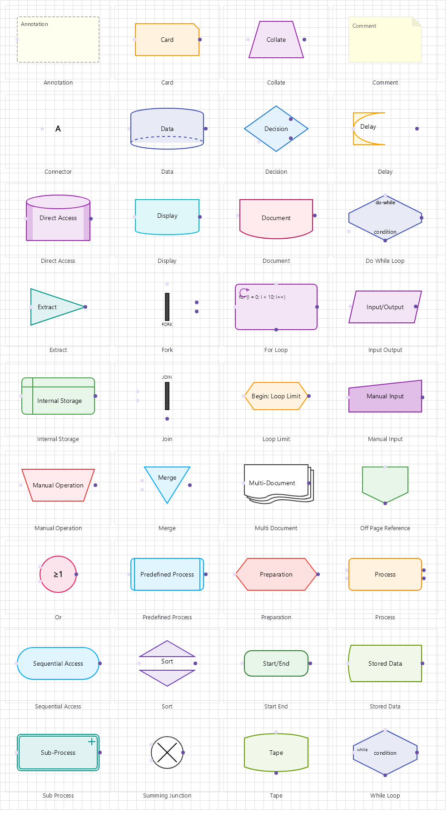

Beep.Skia Documentation

Cross-platform SkiaSharp-based 2D diagramming and workflow automation framework for .NET 8/9
Table of Contents
Overview
Beep.Skia is a visual modeling and automation toolkit built on SkiaSharp: diagramming primitives, an executable workflow runtime, and interactive canvas controls. The libraries multi-target .NET 8, 9 and 10, and the Windows hosts run on .NET 10 (Windows 10 2004+), so the same diagram code serves desktop, web and mobile applications.
The framework spans 16 diagram families and 293 component types across 27 projects, with Material Design 3.0 theming, extensible connection routing, undo/redo, and versioned serialization. On top of the canvas sit four subsystems: an automation runtime that executes diagrams as workflows, a server execution SKU that runs them as queued jobs over HTTP, an extension SDK with a package marketplace, and collaboration with roles, review comments and presence.
Core capabilities include a hardware-accelerated rendering pipeline, a flexible component model based on the SkiaComponent base class, drag-and-drop construction, connection management with automatic pathfinding, and a workflow engine that runs the diagram you drew. Quality is enforced: 501 tests, whole-surface sweeps over every component type, and a warning-free build with warnings-as-errors in CI.
Stats at a Glance
| Category | Count |
|---|---|
| Diagram Families | 16 |
| Component Types | 293 |
| UI Components | 60+ |
| Projects in Solution | 27 |
| Tests | 501 |
| NuGet Packages | 23 |
| Diagram Templates | 12 |
Quick Start
Install the core package via NuGet:
NuGet Installation
dotnet add package Beep.SkiaBasic Diagram with DrawingManager
using Beep.Skia;
using Beep.Skia.Components;
using SkiaSharp;
var manager = new DrawingManager();
var start = new ManualTriggerNode { X = 40, Y = 40, Width = 160, Height = 60, Name = "Start" };
var work = new DataTransformNode { X = 40, Y = 180, Width = 160, Height = 60, Name = "Transform" };
manager.AddComponent(start);
manager.AddComponent(work);
manager.ConnectComponents(start, work);
using var surface = SKSurface.Create(new SKImageInfo(800, 600));
manager.Draw(surface.Canvas);
manager.ExportToPng("diagram.png");Run it as a workflow
using Beep.Skia.Automation;
using var service = new WorkflowExecutionService(maxConcurrency: 2);
service.Publish(manager.ToWorkflowDefinition("Nightly Sync"));
var job = service.Submit(service.Workflows[0].Id, submittedBy: "me");
service.WaitForCompletion(job.Id, TimeSpan.FromSeconds(30));
Console.WriteLine(job.State); // CompletedKey Features
| Feature | Description |
|---|---|
| SkiaComponent Base Class | Unified component model for all visual elements with hit testing, rendering, and transformation support |
| Material Design 3.0 | Full Material Design 3.0 theming engine with light, dark, and custom theme support |
| Drawing Manager | Central orchestrator for managing nodes, connections, selection, and canvas interactions |
| Connection System | Extensible connection routing with automatic pathfinding, port management, and connector styles |
| Undo/Redo | Full undo/redo stack for all diagram operations with granular command tracking |
| Serialization | Versioned JSON persistence for complete diagram state, including connections and per-node configuration |
| Automation Runtime | Execute diagrams as workflows: retries, variables, pause/resume/cancel, triggers and a credential vault |
| Server Execution SKU | Queued job execution over a JSON API and HTTP routes, with a runnable ASP.NET host sample |
| Extension SDK & Marketplace | Ship components and commands as .beepkg packages; install, update and uninstall with dependency and safety gates |
| Collaboration | Roles and sharing, component-anchored review comments with canvas pins, presence and an audit trail |
| Assisted Generation | Turn a description into a diagram with an offline rule-based assistant, or plug in an LLM provider |
| Family Analysis | Code generation and simulation (Flowchart), schema diffing and migrations (ERD), CPM and Gantt (PM), XMI and BPMN export, DREAD and MITRE (Security) and more |
Getting Started
- Installation Guide — Set up Beep.Skia in your project
- Quick Start Tutorial — Build your first diagram
- Architecture Overview — Understand the framework structure
© 2024 TheTechIdea. All rights reserved.